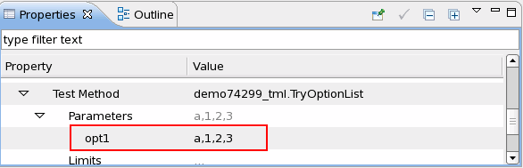

OptionList
This parameter type provides the functionality to enter multiple options as the value of a parameter in this type.
It defines a vector containing string elements. Vector is a standard C++ container. A OptionList variable can be processed with all the member functions of a vector. With these member functions you can query the capacity, access the elements and modify the elements of the vectors. You can find all the member functions of the vector here http://www.cplusplus.com/reference/stl/vector/.
To enter multiple options as the value for the test method parameter in this type, key in the options in the test suite Properties view and separate the options only with a comma.

Example
class TryOptionList: public testmethod::TestMethod {
protected:
vector< std::string > mOpt1;
protected:
virtual void initialize()
{
addParameter("opt1",
"OptionList",
&mOpt1,
testmethod::TM_PARAMETER_INPUT)
.setOptions("a:1:2:3:4:5:6");
}
virtual void run()
{
//Add your test code here.
cout <<"List the options for the parameter opt1"<<endl;
for(int i=0;i<mOpt1.size();i++)
{
cout << "The option" <<i+1 <<"is" <<mOpt1[i]<<endl;
}
return;
}
...
};
REGISTER_TESTMETHOD("TryOptionList", TryOptionList);Functional changes
- Introduced in SmarTest 7.2.0